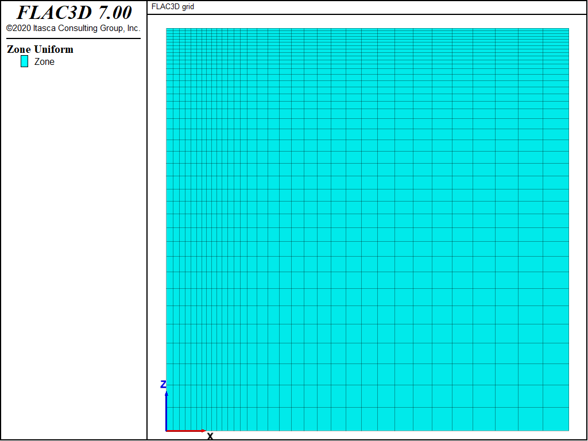
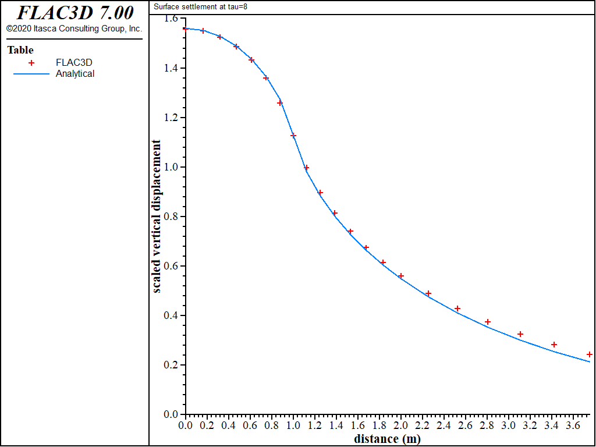
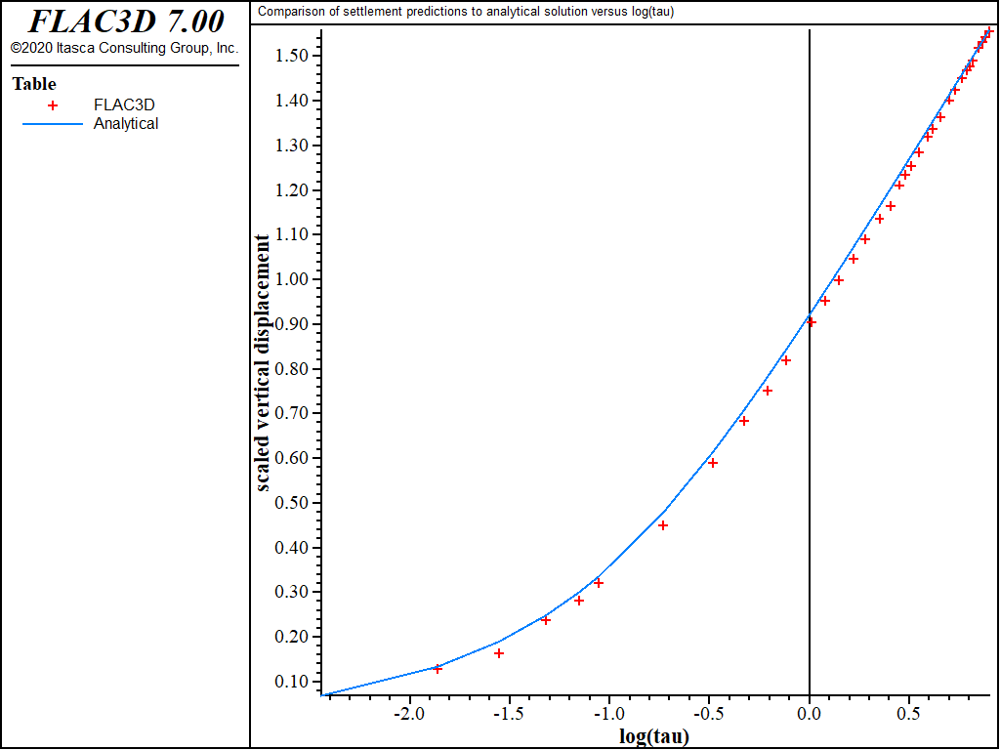
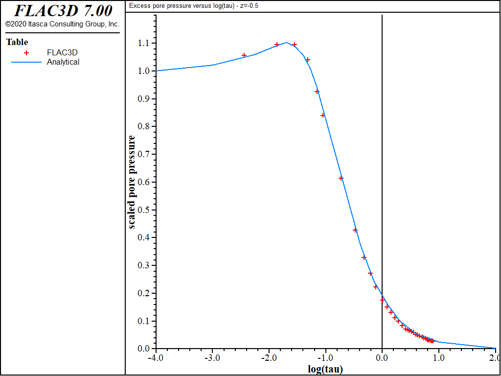
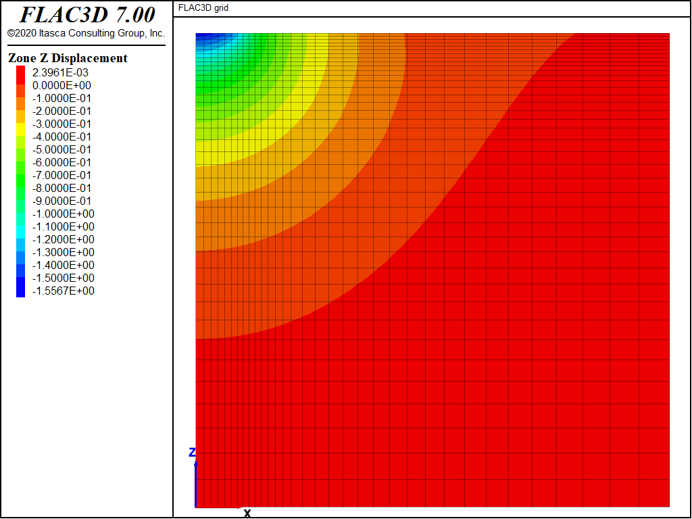

条形荷载中心处的固结沉降
注意
要在 FLAC3D 中查看此工程，请使用菜单命令 。选择“Fluid/ ConsolidationSettlement”，再选择“ConsolidationSettlement.f3dprj”即可加载。该工程的主数据文件（main data files）在本示例末尾给出。
预测软饱和土地基的时程沉降是土力学中具有广泛实际意义的问题。在模拟中，流体一般可视为相对土骨架不可压缩，因此这类问题非常适合检验 FLAC3D 中的 saturated fast-flow 方案，其描述见完全饱和快速流动（Fully Saturated Fast Flow）。该验证问题涉及在半无限弹性介质上施加均布条形荷载所产生的固结沉降，该介质在表面可自由排水。
McNamee 和 Gibson（1960）分析了半无限地层的二维孔隙弹性问题：在 \(z\) = 10 的平面上沿条带 \(-a \le x \le a\) 施加均布法向压力 \(P\)。他们的解中假定流体不可压缩。这里考虑孔隙压力在 \(z\) = 10 处为零（即完全透水表面）的情形。对于泊松比为零的特殊情形，固结地表沉降由以下闭合形式解给出
其中
\(\hat{u}\) 和 \(\hat{u}_{und}\) 分别为 \(z\) = 0 处的无量纲总竖向位移和无量纲不排水竖向位移。\(\hat{x}\) 为无量纲水平距离，\(\hat{G}\) 为无量纲剪切模量。这些量的定义为：
其中 \(u_z\) 为竖向位移，\(G\) 为剪切模量。
erf 为误差函数，\(E_1\) 为指数积分。\(\tau\) 为无量纲时间参数，其表达式为
其中 \(c_v\) 为缩放扩散系数，\(t\) 为时间。对于泊松比为零的情形，\(c_v\) 定义为
其中 \(k\) 为迁移系数。
对于 FLAC3D 数值模拟，取 \(a\) = 1、\(\hat{G}\) = 0.5、\(P\) = 1 和 \(c_v\) = 1。问题条件在平面应变条件下模拟，并利用了问题几何的半对称性。
本分析所用的 FLAC3D 模型网格见图 1（Figure 1）。网格尺寸为 10 × 1 × 10，共 1287 个网格单元。参考坐标系原点位于条带中心线处，\(z\) 轴向上，\(x\) 轴向右，\(y\) 轴指向分析平面内。采用各向同性弹性材料模型，剪切模量为 0.5，泊松比为 0。沿对称边界和底边界指定滚动边界。右侧边界在三个方向上均固定。位移在 \(y\) 方向固定，以模拟平面应变条件。模拟使用流体配置（配置流体计算模式（model configure fluid））运行，整个模型的初始饱和度为 1。模型表面（\(z\) = 10）的孔隙压力固定为零，以模拟自由排水条件。


图 1：FLAC3D 网格。
沿条带位置施加均布力学压力 \(P\) = 1 以模拟条形加载。选用 fastflow 选项（单元流体快速流动命令（zone fluid fastflow） 开启（on））。首先计算不排水响应（模型流体活动命令（model fluid active） 关闭（off），并将模型计算至平衡）。随后将位移重置为零，并进行流体—力学耦合模拟（使用 模型流体活动命令（model fluid active） 开启（on） 和 模型力学活动命令（model mechanical active） 开启（on）），持续 8 个时间单位。
条带中心处地表沉降的预测时程与解析值在图 2（Figure 2） 中进行了比较。在整个模拟过程中，两者结果的差异小于 1%。


图 2：条带中心处的固结沉降（\({\hat{u}-\hat{u}_{und}}\)）随 log(\(\tau\)) 的变化——FLAC3D 与解析解的比较。
模拟结束时（\(\tau\) = 8）由 FLAC3D 计算的地表固结沉降与解析解在图 3（Figure 3） 中进行了比较。两者结果吻合良好。在远离条带位置处观测到的差异归因于边界效应。该差异可通过增大模型的侧向和竖向范围来减小。


图 3：\(\tau\) = 8 时的地表沉降曲线——FLAC3D 与解析解的比较。
在 \(\hat{x}\) = 0、\(\hat{y}\) = 0、\(\hat{z}\) = 9.5 处的预测超孔隙压力（按不排水孔隙压力值缩放）随 log(\(\tau\)) 的变化绘于图 4（Figure 4）。FLAC3D 结果与 Schiffman 等（1969）得到、并由 Burghinoli 等（2001）报道的参考解进行了比较。
一个有趣的观察是，孔隙压力最初升高至超过初始不排水值，随后衰减至零。这种行为是 Mandel-Cryer 效应的典型特征（Cryer，1963）。FLAC3D 解的峰值压力略有不同，但在后期吻合尚可。
\(\tau\) = 8 时的位移云图见图 5（Figure 5）。


图 4：\(\hat{z}\) = -0.5 处的缩放超孔隙压力随 log(\(\tau\)) 的变化——FLAC3D 与 Schiffman 等（1969）给出的参考解的比较。


图 5：\(\tau\) = 8 时的位移云图。
参考文献
Burghinoli, A., S. Miliziano and F. M. Soccodato. “Effectiveness of the fast-flow algorithm: 2D consolidation benchmark and tunneling application,” FLAC and Numerical Modeling in Geomechanics — 2001 (Proceedings of the 2nd International FLAC Symposium, Lyon, France, October 29 - 31, 2001), pp. 345 - 352. D. Billaux et al., eds. Swets & Zeitlinger (2001).
Cryer, C. W. “A Comparison of the Three-Dimensional Consolidation Theories of Biot and Terzaghi,” Quart. J. Mech. and Appl. Math., XVI, 4, 401-412 (1963).
McNamee, J., and R. E. Gibson. “Plane strain and axially symmetric problems of the consolidation of a semi-infinite clay stratum,” Quart. J. Mech. and Appl. Math. XIII, Pt. 2, (1960).
Schiffman, R. L., A. Chen and J. C. Jordan. “An Analysis of Consolidation Theories,” J. Soil Mech. and Found. Div., ASCE, 95(SM1), 285-312 (1969).
数据文件
ConsolidationSettlement.dat
model new
fish automatic-create off
model title "Strip load on semi-infinite elastic medium"
model configure fluid
model large-strain off
zone ratio convergence
; 模型几何体
program call 'geometry' ; 使用二维拉伸工具交互创建
zone generate from-extruder
zone face skin
zone gridpoint group 'output' range position (0,0,10) (4,0,10)
; --- 力学模型 ---
zone cmodel assign elastic
zone property bulk=[1.0/3.0] shear=0.5
; --- 边界条件 ---
zone face apply velocity-x 0 range group 'West'
zone face apply velocity-z 0 range group 'Bottom'
zone face apply velocity-y 0 range group 'North' or 'South'
zone face apply velocity (0,0,0) range group 'East'
; --- 缓慢施加荷载 ---
zone face apply stress-normal -1 servo ramp lower-bound 4e-2 ...
range position-x 0 1 group 'Top'
; --- 流体流动模型 ---
zone fluid cmodel assign isotropic
zone fluid property permeability=1.0 porosity 0.3
; --- 地表孔隙压力固定为零 ---
zone face apply pore-pressure 0 range group 'Top'
; --- 设置 ---
zone fluid fastflow on
model fluid active off
model step 0
; --- 不排水响应 ---
model solve ratio 1e-6
model save 'undrained'
; --- 固结沉降 ---
zone gridpoint initialize displacement (0,0,0)
model fluid active on
model mechanical active on
model mechanical substep 100
model mechanical slave on
model fluid substep 10
;
zone history name 'zdisp' displacement-z position (0,0,10)
zone history name 'pp' pore-pressure position (0,0,9.5)
model history name 'ftime' fluid time-total
;
model fluid timestep fix 1e-4
history interval 50
model solve fluid time-total 0.1 mechanical ratio 4e-4 ; t = 0.1
model fluid timestep auto
history interval 20
model solve fluid time-total 8.0 mechanical ratio 4e-4 ; t = 8.0
model save 'strip8'
program return
| 这些内容对您有帮助吗？… 版权与免责声明 |
FLAC3D © 2019, Itasca | 原文更新于 2020 年 10 月 8 日 |